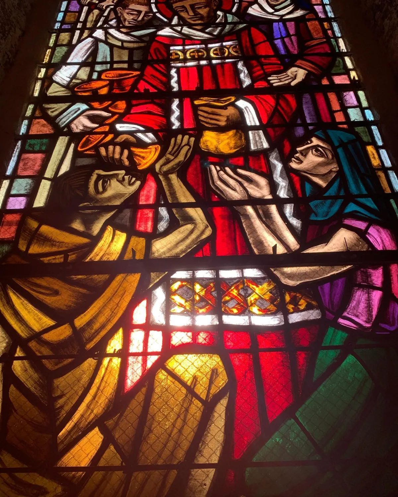
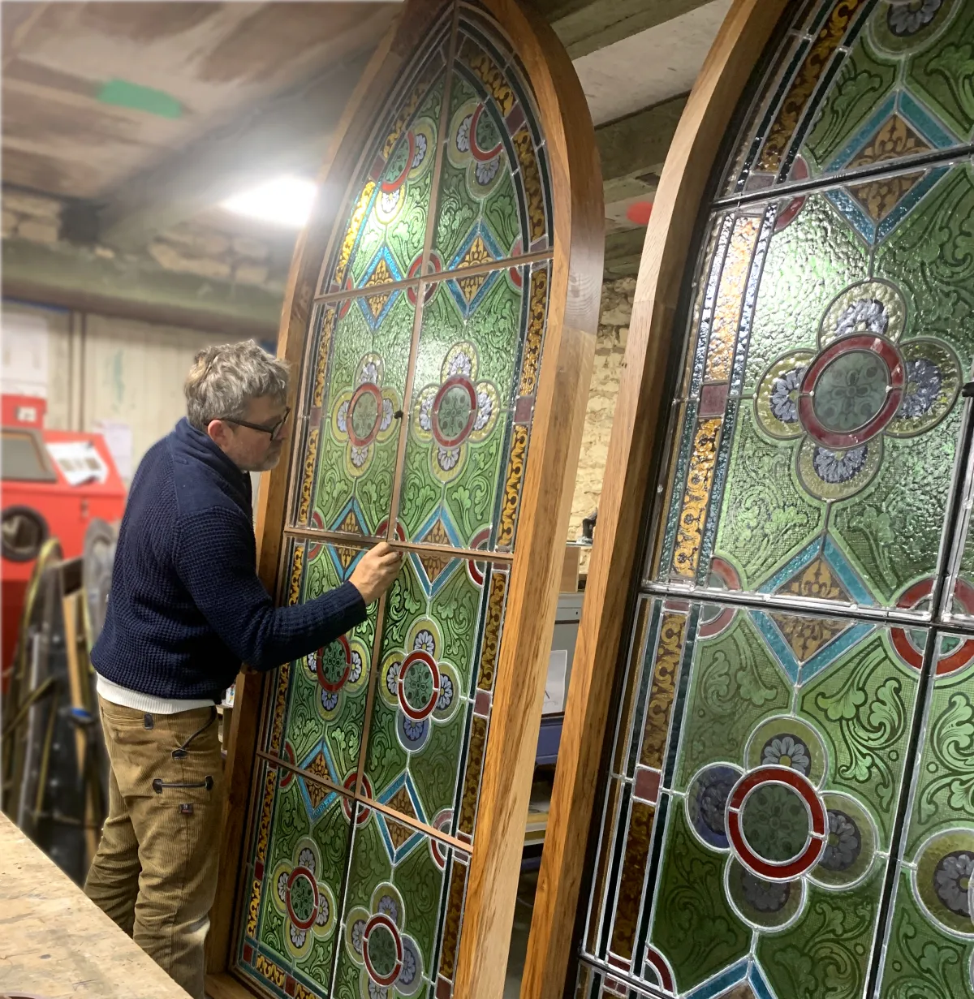
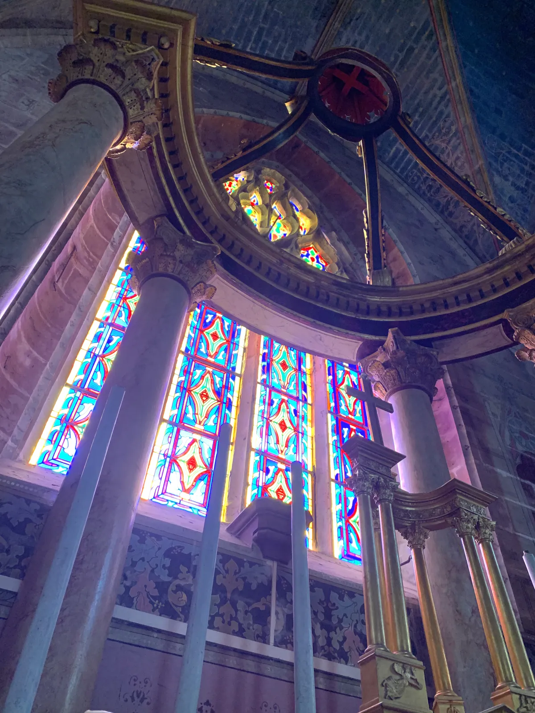

Au cœur de l’atelier
Découvrez notre histoire, notre savoir-faire artisanal et la passion qui anime chaque morceau de verre.
L’artisan
Cyril Deschamps, artisan vitrailliste
Passionné par le verre et la lumière, Cyril Deschamps a fondé Vitraux Liryc pour mettre son savoir-faire au service du patrimoine comme des projets d’aujourd’hui.
Restauration de vitraux anciens, créations sur mesure, fusing et thermoformage, pose de protections : chaque commande est réalisée à la main, avec le même souci du détail et le même respect des techniques traditionnelles.
Transmettre fait aussi partie du métier : l’atelier ouvre régulièrement ses portes au public, lors des Journées européennes des métiers d’art et du patrimoine.

Le lieu
Un atelier dans une chapelle
Vitraux Liryc s’est installé à Parthenay, dans la chapelle de l’ancien hôpital, rue de la Citadelle. Ses vitraux du début du XXe siècle offrent un cadre unique pour travailler le verre et la lumière.
Nous rendre visite
Nos valeurs
Ce qui guide notre travail
-
Respect du patrimoine
Comprendre l’histoire d’un vitrail avant d’intervenir, et conserver tout ce qui peut l’être.
-
Fait main, sur mesure
Chaque pièce est unique, dessinée et fabriquée à l’atelier pour un lieu et une lumière.
-
Transmission
Partager le métier lors des portes ouvertes, comme les Journées européennes des métiers d’art et du patrimoine.
Dans les médias
Ils parlent de l’atelier
Radio, presse, vidéos et événements : retrouvez ce qui a été dit sur Cyril Deschamps et Vitraux Liryc, du plus récent au plus ancien.
Envie de découvrir l’atelier ?
Pour une visite, un projet ou simplement une question, écrivez-nous.